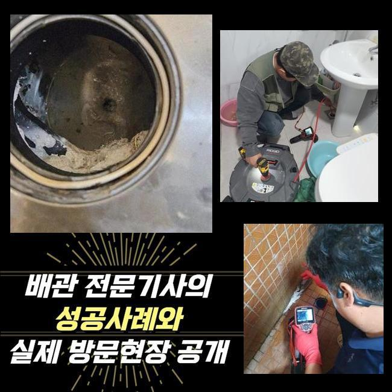
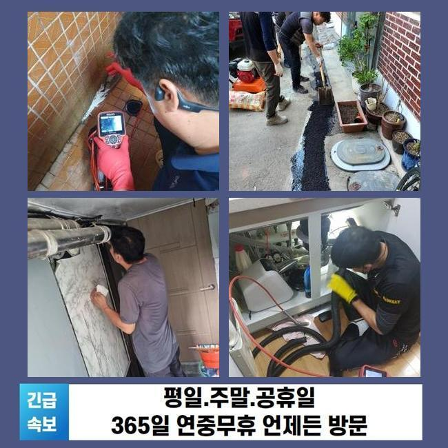
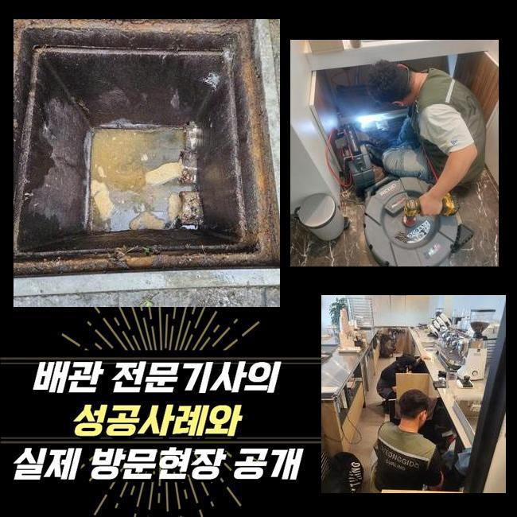
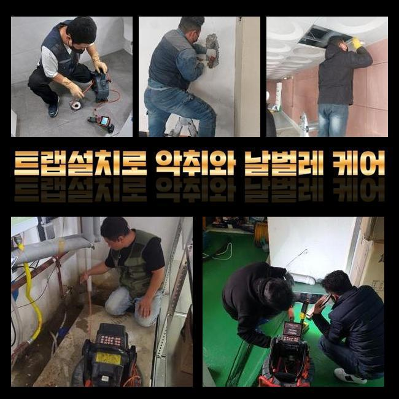
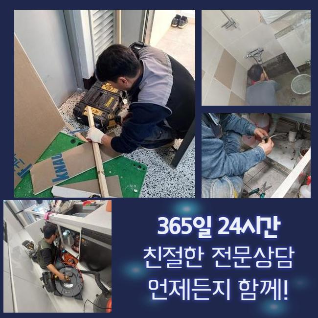

🏠 의정부 용현동대변기역류 가능동 하수구뚫는곳 배관전문
용인 변기막힘 전문 시공 후기

📋 작업 개요
- 위치: 용인
- 서비스 유형: 변기막힘, 하수구막힘, 배관막힘, 맨홀막힘, 역류해결, 뚫는업체, 배관청소, 고압세척
- 작업 일시: 2025. 3. 31. 12:36
- 업체명: 하수구수사대 (010-5615-2118)
🔍 문제 상황
의정부 용현동대변기역류 가능동 하수구뚫는곳 배관전문
얼마 전 한 식당건물에서 하수구 시설의 막힘으로 당장 영업이 안 된다며 빠르게 찾아와달라고 요청을 접수했습니다
음식점과 같은 매장은 하수구 설비가 고장나는 이슈때문에 주방의 집기와 설비를 더는 쓸 수 없다면 당장 요리부터 못하니 한동안 문을 닫아야 할겁니다
하루 빨리 배수기능을 회복시켜야 금전적인 손실도 다운시킬 수 있기 때문에 지체없이 출장가서 보완해드린다고 약속드렸어요
맞이해주신 고객님께서는 주방 밑의 배수구가 막힌건지 물 방출이 이뤄지지 않으며 깊숙하게 자리해 있는 하수구 물이 올라오는 현상도 일어난 것도 문제라고 봐달라고 하셨습니다
식당 안에 달려있는 주방의 배수구 쪽도 체크하고 옥외 배관로까지도 추가 처리를 해드려야 하니 쉽게 끝나지는 않는 시공에 들어가야했습니다
작업에 착수하기 이전에는 현재 처한 문제점들을 두루 조사해본 뒤에 작업에 필요한 기간을 검토해 봅니다
관로가 접해있는 부분이 많다면 복합적인 문제점이 꼬여있다면 말끔하게 고치려면 시간이 더 필요할 때가 있습니다
야외에 설치된 하수구 속을 바라봤더니 맨홀부터 녹물이 줄줄 나왔고 맨홀 옆의 바닥부분도 심히 젖어있다보니 지저분한 상태였어요
작업 중의 결함이 나타나지 않도록 조심스러운 태도로 처리하려고 다짐하고 자세하게 들여다보았습니다

🔎 원인 분석
💡 전문가 진단: 정밀 진단 장비를 사용하여 슬러지의 고착 여부를 판명하고 타격/세척 작업을 실시했습니다.
뚜껑을 들어내자마자 보이는 건 지저분한 오물들이 눈에 들어왔습니다
혼탁한 슬러지 덩어리가 여기저기 접착되어 있는 것을 간편히 파악할 수 있는 정도로 오염이 심해서 초반부의 정리작업을 실시해서 시야를 확보해야 했습니다
주방 측면의 배수구부터 물길을 만들어준 다음에 배관에 넣는 카메라를 진입시켜서 관측을 시작합니다
내외부의 하수관들이 어떤 구조를 띠고 있는지 분석한 다음엔 고압수를 쏴서 배관 안에 자리한 유분기 어린 슬러지를 세척하기로 순서를 매겼습니다
이 상태로는 내시경을 넣어봤자 어떤 것도 살펴보기 힘들 듯 해서 석션기로 잔수를 흡입하는 작업을 우선실시해야 했어요
이 석션기기는 마치 청소기처럼 진공 방식으로 동작하는데 누적된 잔여 오염수와 오물들을 강한 힘으로 한 곳으로 모아주는 역할을 담당하는데요
강력한 끌어당기는 힘으로 견고하지 않은 액체나 고체는 쉽게 기다란 석션 내부에 들어가서 누적됩니다
접착성 물질이거나 벽과 한몸처럼 말라붙은 접착물질은 없애기 힘들어서 석션기만 작업해주는 걸로는 하수관을 맑게 만들 수 있는 현장들이 많지않은 것이 사실입니다
시공 초반과 말미에 누락하지 않고 석션 장치를 작동시키고 있을만큼 식당 하수구 청소를 위해서는 반드시 최소 한번은 작업 중에 쓴답니다
석션을 돌려서 배관 안을 세척해준 이후에 다음으로 카메라를 내려보냈죠
이 내시경기기 덕분에 흙으로 덮여있는 배관이거나 색다른 식으로 설치된 배관일 때도 놓치는 구석 없이 검사를 해보면서 오물과 얼마나 더럽혀졌는지에 대해 단서를 찾아낼 수 있습니다

🔧 작업 과정
지난 작업을 반추해보면 뭉쳐있는 이물질 덩어리와 유분막이 많이 관찰됐습니다
결과를 내보면 이것들이 위급한 연락을 주신 식당의 확실한 이유일 것이라는 추정이 됐습니다
알게모르게 배수관 내측으로 새어나간 기름 성분이 통로 지름에 맞게 자라났고 그 탓에 바깥쪽까지 내려갈 곳을 상실하게 되고 턱 막혀버려서 역행을 하게 된겁니다
내부배관을 석션기로 세척하는 동시에 하수들이 집합하는 바깥에 있는 맨홀 안도 청결관리를 해드릴 필요성이 있었어요
샤프트는 스케일링 기기이며 그 끝에는 견고한 갈고리가 장착되어 있는 형상입니다
앞선 석션으로도 여전히 남은 크기가 큰 침전물이나 배관과 혼연일체가 된 오물을 살살 긁어서 빼거나 잘게 쪼갤 수 있어요
이런 샤프트기기와 잔처리를 하는 석션 파이프를 보는 카메라 역시 작동시켜야만 뚫음 청소가 완수될 수 있으며 정체를 빚는 배관 성능을 원상복구할 수 있습니다
배관 특성을 알아봤더니 쉽게 끝날 문제 같지는 않아서 고압수를 쏘는 활동도 적용해야 할 듯 싶더라고요
샤프트 석션으로 내부정화를 한 덕에 유속이 아까보다는 많이 관통됐음이 목격돼서 하수구 고압세척기를 넣어서 내부 정화를 이어갔습니다
고압의 물줄기를 정확한 좌표로 보내는 호스를 활용해서 오물이 집합화가 되어있는 곳들을 순차적으로 삭제했습니다
반복적인 업무 덕분에 배관 직경만큼 자라났던 슬러지가 말끔하게 소멸했습니다!
본작업에 선행하여 카메라를 써서 배관상의 문제점을 제대로 관심있게 조사해보고 여러 장비를 통한 청소를 실시해서 많게만 느껴졌던 오물들을 전반적으로 없애는 과제에 성공할 수 있었던 것 같습니다
시공을 완전히 끝내고 안쪽의 변화를 확인하니 새로운 배관으로 재탄생한듯 여기저기 부착되어있던 침전물이 통로 어디에서도 감지되지 않았고 벽체까지도 말끔해져서 미끈하게 뚫린 배관의 모습도 드디어 목격하게 됐습니다
파이프 안에 누적되면서 고여서 냄새를 유발하던 오염수도 시원스레 없어지고 그 모든 유해한 물질들이 없어졌습니다
아무래도 음식점과 같은 매장은는 요리를 하는 빈도가 매우 많기 때문에 아무래도 막힘이 생길 사태가 더 자주 일어납니다
양념 덩어리나 음식물을 비롯해 미끌미끌한 기름기가 관로로 흘러가지 않게 평상시에 업무하실 때 주의를 하며 써야 합니다
성급하게 마무리하지 않고 출수하고 경과를 보면서 작업이 미관과 성능 모두 개선했는지 마지막 검수를 하게 됩니다


✅ 작업 완료
개수대 안에서 수돗물을 쏟아준 다음에 마찬가지로 청소한 옥외시설까지 중간에 멈추는 느낌 없이 배출이 시원하게 되는지 예리하게 관찰하는 단계입니다
쏟아부었던 물기가 시원하게 이동하는 걸 감지되어 다행이었습니다
하수구 기능을 되돌려드리고 고객님께 업무마감을 안내드리고 고객님 댁에서 나왔습니다
하수가 제대로 나가지 못하면 쉽게 해결되지 않을까하는 기대로 뚫어뻥 등을 휘두르시다가 오염원이 더 집적될 수 있습니다
막힘이 생겼다고 연락하신다면 내방드리고 물막힘이 빚어진 사유부터 추적해서 없애드리니 전문적 조치를 받아보시기 바랍니다!



⚠️ 하수구 배관 막힘 예방 및 관리 가이드
- ✅ 머리카락, 비닐, 물티슈 등 물에 분해되지 않는 이물질은 하수구 유입을 절대 금지해 주세요.
- ✅ 하수구 거름망을 씌우고 모여진 이물질은 주기적으로 쓰레기통에 바로 비워주셔야 합니다.
- ✅ 배관 노후가 심할 경우 이물질이 더 쉽게 걸리므로 주기적인 배관 세척(고압세척 등)을 권장합니다.
- ✅ 작업 후 1년 이내 재발 시 하수구수사대에서 무상 A/S 보증 서비스를 제공합니다.
💡 핵심 정리
- 확실한 장비 작업(내시경 점검 및 샤프트 스케일링)으로 원인을 뿌리 뽑습니다.
- 작업 후 1년 이내에 동일한 부위 재발 시 100% 무상 A/S 서비스를 보장합니다.
- 서울 · 경기 · 인천 전 지역에 24시간 언제든 긴급 출동할 수 있도록 항시 대기 중입니다.
❓ 자주 묻는 질문 (FAQ)
🚨 용인 변기막힘 문제로 고민이신가요?
정확한 원인 진단과 확실한 시공으로 재발 없는 해결을 약속드립니다.
24시간 긴급 출동 | 서울 · 경기 · 인천 전지역 | 1년 내 재발 시 무상 A/S